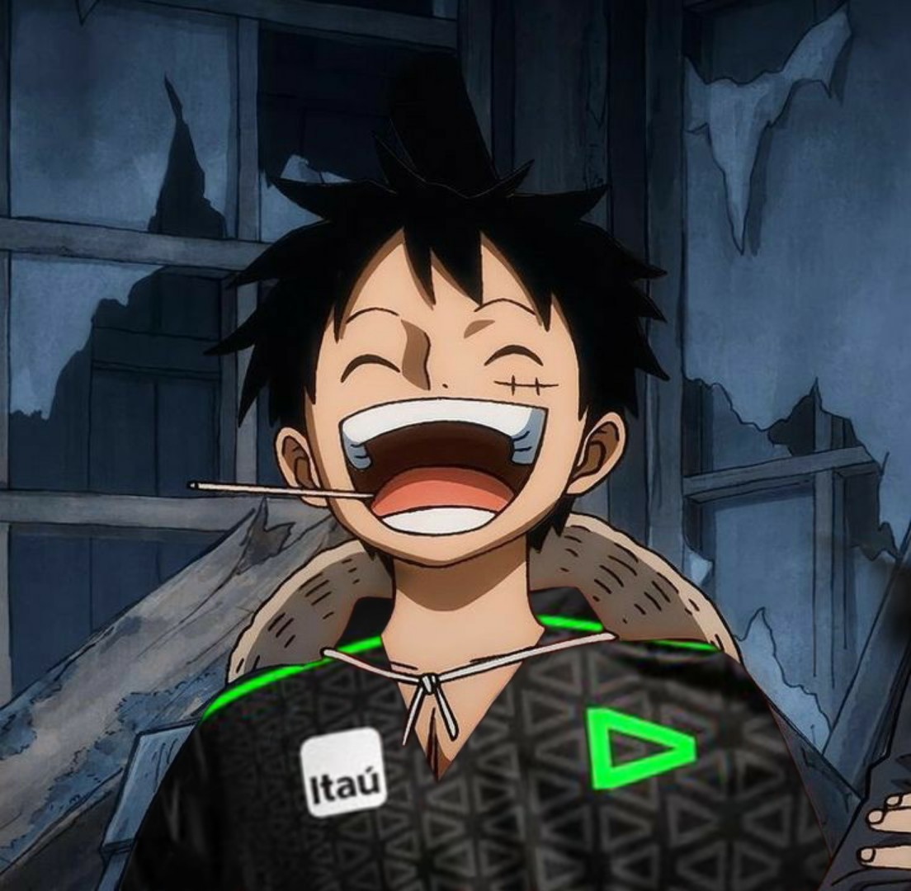

about me
Meu nome é Arllan, tenho 17 anos e sou fascinado por tecnologia, especialmente computadores e internet. Apesar de não ser fã da escola, reconheço que aprendi muito sobre como utilizar a internet para trabalho graças a ela. As aulas muitas vezes não me desafiam, e sinto que poderia aprender mais através de experiências práticas. De qualquer forma, valorizo o conhecimento inicial que adquiri sobre computadores.
Tenho um desejo enorme pelo sucesso, e espero logo sair do brasil.